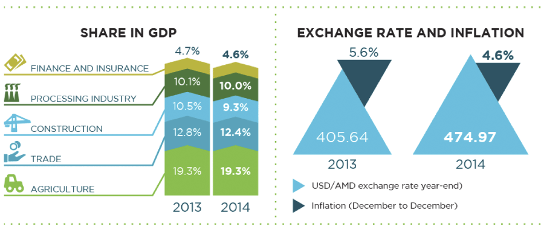
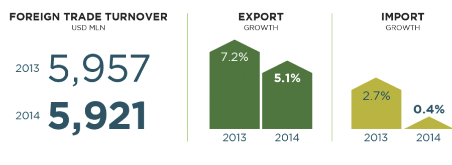
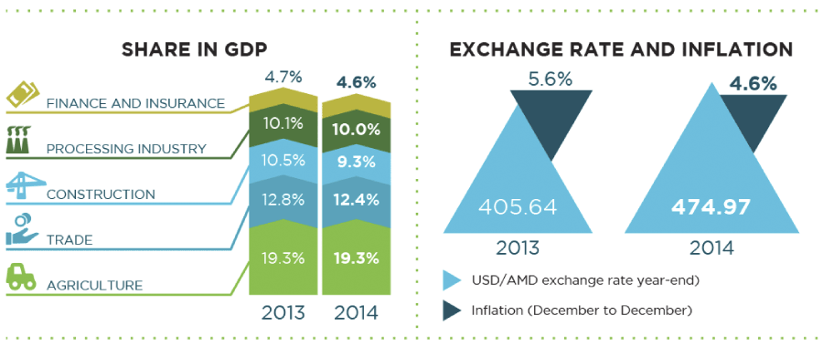
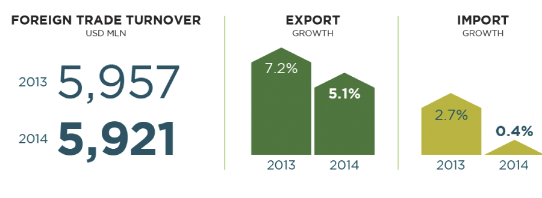
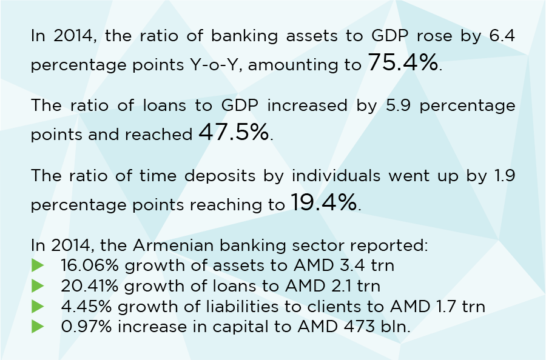
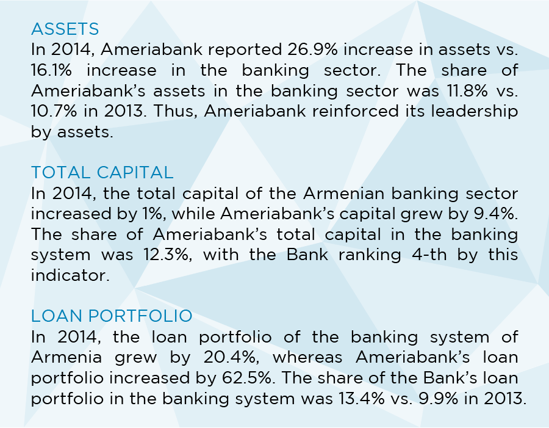

Ameriabank, a member of Ameria Group, is a leading bank in Armenia, with dynamic growth rates outstripping those of the Armenian banking sector. The year of 2014 was another year of an exemplary progress as Ameriabank ranked first by assets, liabilities, loans to customers and profit. With such leading positions, Ameriabank distinguished itself once again as a bank where clients and partners enjoy an exclusive environment of high-quality service, customised banking solutions, and consistent growthopportunities. Ameriabank is one of the few banks in Armenia providing full-fledge banking solutions in RETAIL, CORPORATE& INVESTMENT BANKING.
CHAIRMAN’S LETTER
Dear Customers, Shareholders and Partners,
We have concluded 2014 with unprecedented achievements as an absolute leader in the market by key financial indicators - profit, total assets, loans to customers, total liabilities and liabilities to customers. Through our consistent focus on customer service, innovations and increase of shareholder value we maintained a resilient and prudent balance sheet on the background of our annual growth prevailing market growth rates several times. Net AMD profit grew by 18%, while the market net profit reduced by 41.3%. Return on average equity to the Bank’s shareholders was strong likewise, at 17.8%, while the market’s was 5.6%. In 2014, Ameriabank and FMO (The Netherlands Development Finance Company) for the first time since the formation of the Armenian banking system signed a USD 20 mln convertible subordinated debt facility agreement. We expect the conversion into equity to take place in the first half of 2015. Overall, in 2014 Ameriabank demonstrated a particularly robust and unmatched performance against local macroeconomic and regulatory changes at the end of the year.
From a macroeconomic perspective, Armenia delivered relatively strong GDP growth of 3.4% in 2014 compared with that of the previous year. Such growth demonstrated the resilience of the Armenian economy in the light of macroeconomic and currency devaluation pressures in Armenia and many of Armenia’s trading partner countries. Armenian Dram depreciated up to 17% against the US dollar during 2014, considerably affecting customer behaviour. Given this, we have adjusted our risk management metrics and controls to reflect the revised macroeconomic outlook. It is noteworthy that the Bank’s asset quality has not deteriorated: Ameriabank is positioned among top 5 Banks with lowest non-performing loans ratio, while featuring the biggest loan portfolio in the market.
In December 2014, in line with macroeconomic and currency devaluation pressures the Central Bank of Armenia raised the minimum amount of total capital to AMD 30 bln from the current AMD 5 bln from January 1, 2017. This was yet another toughening of a key requirement aimed at ensuring the stability, efficiency and transparency in a liberal, but strictly regulated Armenian banking environment. Ameriabank is one of five Banks among 21 operating Banks in the market that already today complies with the requirement of AMD 30 bln. We see this as a potentially attractive opportunity for our non-organic growth. I would also like to highlight our accomplishments with respect to corporate governance. Ameriabank has traditionally had high standards of corporate governance. We believe that effective succession planning mitigates the risks and increases efficiency of management. Hence, in 2014 I succeeded the former Chairman Mr. Ruben Vardanyan who remains as Board Member enhancing the proficiency of Board performance by his invaluable experience, knowledge and leadership. We continued to augment our risk governance structure. In 2014, we actively worked on a new development phase for the Bank’s Corporate Governance by drafting charters for Board Committees such as Audit, Risk, Remuneration and Nomination, as well as Code of Ethics and Business Conduct, all coming into force in 2015. The latter is an important milestone toward further enhancing our team-centric and customer-oriented corporate culture. We continued our robust investments in development of our People, as well as in identification of the best talents in the market.
Looking ahead, we will continue to focus on our competitive strengths to further enhance our leading positions across all segments and continue delivering strong financial performance in 2015 and beyond. I believe that our efforts aimed at consistent excellence will help us to sustain our leadership position in the market and to grow further both organically and non-organically despite expected turbulent macroeconomic climate.
Finally, I would like to express my gratitude to all Clients, Partners, Shareholders, my fellow Board members, the Bank’s outstanding Management team and to our Team, who have jointly supported Ameriabank on its growth path to our current position of the market leadership.
CHIEF EXECUTIVE’S
REVIEW
Our 2014 results and market positions clearly demonstrate the benefits of the resilient business model and strategy we have adopted in Ameriabank for the past 7 years. Thanks to consistent – albeit agile – response to the drastic market developments we were able to capture the momentum and report a year-end profit up by 18%, being first in the market, and return on our shareholders’ average equity up to 17.8%. Our performance reflected trust of our partners and customers, strength of our balance sheet, viability of cost control mechanisms, and steady growth of profitability despite the sluggish development of the overall finance industry.
I would like to present 2014 by highlighting some of the key drivers of our continuous growth and success.
AMBITION TO EXCEL MARKET BENCHMARKS
We have greatly enjoyed our leadership being the first in the market by profit, assets, loan portfolio, liabilities and customers’ deposits. Being the market leader is flattering but at the same time obliging to serve as the most representative benchmark in the market of 20 Banks that are to follow you. We are determined to maintain our market leadership, which is built on our strong Retail Banking and Corporate Banking businesses, comprising the backbone of the Bank.
We remained committed to our strategic goal of becoming a truly Universal Bank with diversified loan portfolio and revenue stream. As a result of numerous campaigns and new products/solutions we experienced 73.2% annual growth in SME lending and 37.7% annual growth in retail lending. Despite featuring the biggest loan portfolio in the market we are among the top five Banks with lowest NPL ratio at 3.1%, while the market average in 2014 was 7.86%. We were also focused on increasing efficiency and shareholder return by reaching return on average equity to around 17.8% in line with our annual strategic targets. Another aspect of our daily focus was optimizing cost control and cost to income ratio, which is much below the banking sector’s ratio at 49.4%.
Our total attracted funds from International Financial Institutions (IFIs) and non-resident partner banks have reached USD 373 mln (including TFP) and indicate a long-term solid partnership and trust between our Bank and IFIs. It is worth mentioning that this is an unprecedented amount issued to a single bank operating in Armenia. In 2014, we have signed several notable loan facility agreements including one with the EBRD for USD 10 mln, BSTDB for USD 10 mln and FMO USD 20 mln convertible subordinated debt.
In 2014, the Bank secured annual AMD net growth rates of 26.9% by assets, 62.5% by loans (including leasing and factoring), 29.3% by liabilities and 22.8% by clients’ deposits, surpassing the market annual growth rates which were 16.1% for assets, 20.4% for loans, 18% for liabilities and 4.45% for clients’ deposits.
ACCELERATION THROUGH INNOVATION
At Ameriabank we always focus on using the most innovative and cutting-edge technologies for our banking solutions, and are permanently committed to sustaining high standards of service. As a result of our commitment TÜV Rheinland Germany has consistently reissued ISO 9001:2008 quality management certificate to Ameriabank since 2009. In 2014 we have launched 24/7 fully operating contact center, as well as enhanced accessibility for Ameria Online Banking users, by developing mobile banking. We offer globally competitive trading and brokerage platforms to our clients. In March of 2014, we officially launched our Arshakunyats Branch in newly opened Yerevan Mall that welcomed 1st cash-in ATM machine providing fast self-service for retail clients.
ASSESSMENT AS A CHECKPOINT
As a truly client-oriented Bank, we carefully follow our NPS score improvement year over year and we are happy that our customers’ overall satisfaction from the Bank’s service quality and performance has been constantly increasing trend. We also continue our financial and professional investments into enhancement of our sophisticated CRM system. As a result of our continuous efforts aimed at improving and excelling our service quality and market position, Ameriabank is 1st by brand awareness among Armenian companies, according to annual monitoring surveys held by Ameria Management Advisory team.
Ameriabank was named The Best Bank of the Year 2014 in Armenia by Euromoney Awards for Excellence for the 3rd time, Best Bank and Best Trade Finance Bank by Global Finance Magazine for the 4th time and also obtained “Deal of the Year” award by the EBRD.
ABILITY TO UNITE, CHALLENGE AND ACCOMPLISH
At Ameriabank we have a vigorous belief in that the cornerstone of our success is our Team of professional and loyal enthusiasts. Our axis is our people who enjoy and are proud of being part of our Dream Team. Therefore, we consistently invest in developing our employees through various educational and mentoring programmes. We have our own full-scale operational training center. We have also initiated an internship programme for graduates, called “Generation A”. It identifies recruits and develops bright talents among a huge pool of young applicants. Thus we have created corporate culture that encourages growth and enthusiasm. It provides unprecedented benefits to its employees, especially to those with sound and consistent track-record during semi-annual evaluation cycles.
Looking back, I am proud of how much has been achieved. Entrepreneurial spirit is at the heart of Ameriabank’s culture and is one of our strongest assets. It has resulted in the creation of a very strong brand that will be very difficult to match and even harder to displace. Such success in turn has created a new important task for us. We should diversify our loan portfolios and revenue streams, as well as enlarge operations through local and regional acquisitions.
APPRECIATION AND LOOKING FORWARD
We are looking forward to a busy and exciting year ahead of us. The key strategic initiatives that we undertook a few years ago are gaining momentum. While we made considerable progress this past year, I believe we have much more work ahead of us to realise the great potential of Ameriabank. We are confident in our competitive position and remain focused on delivering value to our shareholders, lenders, customers and employees.
I am much honoured to extend my word of appreciation to our team consisting of true professionals and bright individuals. Yet again, let me also deliver my gratitude to all our clients, partners, suppliers and all other stakeholders for their trust and loyalty leading to our consistent improvement and absolute leadership in the market. We are thankful for the continuing support, encouragement and goodwill of all our shareholders and the Board.
Since 2007 Ameria Group of companies has been providing wide range of advisory and financial services both in local and international markets. The Group has proven its leadership and excellence in the market through its financial performance figures, customised approaches, full-fledge solutions, diversity of client base and wide list of high profile clients.
Ameria Group has been on the market for 17 years now. Starting from 1998, it has been uniting young, dedicated and promising experts of the local market as one of the first professional advisory firms in Armenia. 1999 and 2007 Ameria diversified its advisory services complimenting those with legal advice, tax & assurance, and asset management. In 2007, Ameria, together with Ameria Group (CY) Limited (previously TDA Holdings Limited) started the most aggressive expansion in the Armenian emerging financial sector. As a result of this partnership, in 2007 Ameria Group (CY) Limited acquired the majority share in the capital of Armimpexbank that was renamed and rebranded into Ameriabank a year later. With this change of stakeholders the Bank stepped into a new age of development with new strategy and management principles. At present, Ameria Group is one of the few if not only organizations in the country providing such a wide range of advisory and financial solutions in such key areas as:
- Banking,
- Investment banking and Asset management,
- Management advisory,
- Legal advisory,
- Property development and financing.
AMERIA is one of the leaders in the market of legal and management advisory services in Armenia, providing an array of comprehensively packaged solutions under the umbrella of a single advisory team. Clients benefit from the synergy of a unified team of advisors who approach any client case from the prospective of legal, tax, financial and management viability. Our advisory services include but are not limited to: legal practice (in corporate and M&A, public sector reforms, tax & customs, etc.), corporate restructuring, development and strategy, operations and technology consulting, as well as complex management solutions and researches.
AMERIA ASSET MANAGEMENT is the company where Ameria Group concentrates its asset management knowledge and capacities. Our dedicated portfolio management team was among the first firms to pioneer mutual funds in the country and has successfully built and marketed the fund business for last several years now. Innovation is in the heart of our asset management business model. For such countries as Armenia where asset management products are hard to sell, we have successfully designed such products that compete and win market share from bank deposits with historic dominance in retail investor sentiments.
Since 2011 the Diaspora community gained an opportunity to benefit from full-fledged advisory services connecting Diaspora investors to promising business and investment opportunities in Armenia.
AMERIA GROUP INC., Ameria Group’s representative office in Los Angeles, USA, serves as a professional bridge between the Diaspora Armenians and Motherland Armenia, with a major focus on legal, management, M&A, equity financing & debt advisory services.
PRODECO is a company providing investments in the real estate market and delivering services in the construction works management. At the core of the business is its forward thinking approach to sustainable development and design through cutting-edge technologies. Currently, the company is in charge of restoring one of the oldest building in modern Yerevan and developing the first green multifunctional business complex in Armenia. For this project, Ameriabank raised USD 18 mln from such strategic investors as International Finance Corporation (IFC) and Deutsche Investitions und Entwicklungsgesellschaft mbH (DEG).
One of the most dynamically and steadily growing institutions of the Group is AMERIABANK, a universal bank offering comprehensive banking solutions in corporate, retail and investment banking. The cornerstone of our business is: individual approach to each client and innovation coupled with the high professionalism and profound expertise of a united dream team. This approach became our gateway to success pushing Ameriabank into the top tier of the leading banks in Armenia.
Erivan Branch of Tiflis Trade Bank was built on Ter-Ghukasov St. In 1916 Tiflis Trade Bank was renamed into Caucasus Bank. The archived documents state that most of the monetary resources transferred to Armenia came through the Erivan Branch of Caucasus Bank.
Erivan Branch of Caucasus Bank nationalised by the Decree of Revolutionary Committee dated December 18, 1920. Starting from February 1921 to March 1922 the building was occupied by the Armenian Telegraph Agency (Armenta). On March 24, 1922, the State Bank of Armenia moved into the building. In March 1924 the Communal Bank of Armenia started its operations on at 2 Nalbandyan St. (former Ter-Ghukasov St.).
In 1959 the Communal bank was disbanded, and its assets and liabilities were passed to the Armenian branch of Stroybank, located in the same historical building situated at 2 Nalbandyan St. In 1974 the Armenian branch of the USSR Vneshtorgbank was established in the same building, while as the Armenian branch of Stroybank moved to another building. In 1988, the Armenian Branch of Vnesheconombank USSR was established in the same building, which was reorganised into Armimpexbank (Armenian Import - Export Bank) CJSC in 1992. In 1995 the majority share of the Bank was acquired by Computron Industries Establishment, which made it a bank with a foreign capital.
In 2007 the majority of Armimpexbank shares was acquired by TDA Holdings Limited. In 2008 the bank was renamed into Ameriabank CJSC.
In 2009, awarded with certificate of compliance with the ISO 9001:2008 international quality management standards. Infrastructure & Innovation:
- Opened its 1st branch in Stepanakert (NKR). Later, opened two other branches – in Kajaran town, one of the mining center in Armenia (Syunik marz) and in Yerevan (Kentron branch), as well as moved into a new Head Office in Yerevan.
- Became a principal member of VISA International and a member of Armenian Stock Exchange (ASE).
- In July 2009 signed an agreement with International Finance Corporation (IFC) as part of Global Trade Finance Program (GTFP).
- Legal advisory,
- In December 2009, signed an agreement with FMO/ DEG for USD 30 mln debt financing to enhance SME lending facilities.
- In 2010 two awards from Commerzbank – Excellence Award for high quality international operations during 2009, as well as an Award for Excellence in Trade Finance.
- The Best Bank of Armenia in 2010 award from The Banker magazine of Financial Times.
- Euromoney 2011 Award For Excellence as the Best Bank in Armenia.
- IFC’s GTFP Award 2010 as the most active issuing bank in the Caucasus under the Global Trade Finance Program (GTFP).
The Bank opened five new branches – two in regions (Dilijan, Vanadzor) and three in Yerevan (Cascade, Komitas, Moskovyan).
The Bank launched Purchase Order Financing as part of “Partners for Financial Stability” programme implemented by USAID and received the status of Agent on medium and long-term RA Government (treasury) coupon bonds.
The Bank signed USD 30 mln credit facility agreement with Eurasian Development Bank (EDB) for SME financing in Armenia, as well as signed two agreements (an agreement on raising funds for the development of trade finance instruments and USD 20 mln credit facility agreement for a term of 5 years to foster SME lending) with the Asian Development Bank (ADB). Commerzbank issued a bank guarantee in AMD and provided SME financing loan approval without collateral, guarantee or letter of credit.
- Euromoney 2012 Award For Excellence as the Best Bank in Armenia for the second year in a row
- The Best Bank of Armenia in 2013 award from The Banker magazine of Financial Times
- The Best GTFP Issuing Bank for Energy Efficiency IFC award
- The most active TF issuer in Armenia in 2012 in the EBRD
- The Best Trade Financing Partner 2012 Award, the STP Award 2012 for excellent 99% results in performance of international transfers, Excellence in Trade Finance Award 2013 by Commerzbank.
- In 2012 and 2013 the Best Foreign Exchange Provider in Armenia, the Best Trade Finance Bank in Armenia and the Best Bank in Armenia by Global Finance
- Joined Factors Chain International, a major global factoring network in 2013.
- Opened two branches in Yerevan (Shengavit, Sayat Nova) and reopened Stepanakert branch in new premises.
- First in Armenia, offered a unique opportunity to obtain debut sovereign USD-denominated eurobonds of Armenia circulated in the international capital markets.
- Launched Visa Card Internet acquiring services
- First in Armenian banking sector was granted a confirming bank status by the European Bank for Reconstruction and Development (EBRD) under Global Trade Facilitation Program.
The Bank funded USD 15 mln for the reconstruction of a steel-making plant in Charentsavan, Armenia, under the Global Trade Finance Program of IFC. It signed a Revolving Credit Agreement September (RCA) under the Trade Finance Program and USD 20 mln credit facility agreement with ADB, as well as USD 12 mln loan agreement with the EBRD, USD 15 mln credit facility agreement with Proparco, USD 15 mln loan facility agreement with Austrian Development Bank (OeEB). The Bank signed an unprecedented deal for an Armenian bank: the Bank confirmed a letter of credit to a Kazakh bank, which is part of a large banking group.
- Euromoney 2014 Award For Excellence as the Best Bank in Armenia for the third time
- The Best Bank in Armenia by factoring transactions based on FY 2013 results by International Corporate Intl Magazine 2014 Global Awards
- Deal of the Year in 2013 within EBRD Trade Facilitation Program, received in 2014
- The Best Foreign Exchange Provider in Armenia 2014, the Best Trade Finance Bank in Armenia 2014 and the Best Bank in Armenia 2014 by Global Finance
- The Best Bank in Armenia by EMEA Finance’s Europe Banking Awards 2014
- The STP Award 2013 for excellent 99% results in performance of international transfers by Commerzbank
- TUV Rheinland Germany-based company re-certified Ameriabank’s compliance with ISO 9001:2008 international quality management standard for the second time (in April 2015).
- Opened two branches - Arshakunyats Branch with express banking technologies in Yerevan and Kapan Branch in Kapan city (Syunik marz, Armenia).
- Launched Contact Center equipped with cutting-edge technologies and provided customer service 24/7 for cards through the Center.
- In 2014, first time in Armenian banking system signed a USD
- 20 mln convertible subordinated debt facility agreement with FMO.
- Signed its 80th trade finance deal covered by the EBRD Trade Facilitation Program
- The Bank’s portfolio was upgraded through the purchase of a new credit portfolio from Norvik Universal Credit Organization.
We are proud of our successful track record of balancing the interests of our stakeholders, including shareholders, customers, employees and the communities in which we live and work.
We have a strong foundation of integrity, trust, and ethical behavior in all of our businesses. Our strong foundation allows us to prudently serve to individuals as well as businesses of all sizes. Our financial strength ensures the fulfillment of our responsibility for keeping our customers’ financial assets safe. We have created jobs for more than 600 people, and have become an economic driver for Armenia as one of the leading financial groups and employers in the country. We are committed to share and multiply our success via sustainable and sound corporate social responsibility (CSR) activities that have extended beyond our business practices to children’s healthcare, education, community development and rehabilitation of the cultural heritage of Armenia.
One of the main principles of our CSR policy has been long-term and reliable partnership with rigidly selected foundations. Following our core values, i.e. responsibility and professionalism, we make sure to find partners that provide transparent activities and give corresponding reporting which can be provided to all stakeholders.
Children with life-threatening diseases
In 2014 Ameria Group organised the 5th traditional New Year and Christmas charity auction, to fundraise for the treatment of children with life-threatening diseases. The auction was held under the slogan “Sport for Life” featuring autographed souvenirs by world-known sportsmen, also those of Armenian origin. Many of them teamed up and donated memorabilia with a special autograph for this auction. The united commitment of world-known sportsmen to contribute to this cause was yet another expression of our corporate values, i.e. team spirit and integrity. As a result, a total pool of more than AMD 62 mln was channeled to medical treatment of kids with life-threatening diseases (Ref.: Ameria Group raised AMD 31 mln in 2013, AMD 35 mln in 2012, AMD 19 mln in 2011 and AMD 21 mln in 2010. Each year all proceeds were doubled by Ameria Group). The auction proceeds went to kids with idiopathic arthritis and onco-haemotological diseases, who are beneficiaries of “Let’s Help the Armenian Children”, “Gift of Life” and “Children without Pain” foundations. In 2014, for the first time the traditional auction was supplemented by an online auction, involving not only Ameria Group’s partners and clients but also the Armenian public.
So far, thanks to direct contributions and donations from Ameria Group, its partners, clients and staff, AMD 364 mln has been directed for children’s treatment, saving more than 135 lives.
Improvement of Medical Infrastructure
In 2014, Ameria Group also financed another project aiming to support the infrastructural and quality development of children’s medical treatment. AMD 21 mln was donated to “Sourb Astvatsamayr (St. Mary)” Medical Centre (SAMC) to equip it with Hamilton Medical’s most modular high-end mechanical ventilator equipment, i.e. a centralised facility for artificial respiration and oxygen supply.
Scholarships to Talented Armenian Children
Aiming to improve the quality of education in Armenia and to provide an opportunity for high quality education to children with exceptional academic performance, the Group became one of the scholarship funders for the newly established international UWC Dilijan School. Dilijan International School is a member of United World Colleges (UWC), a movement with schools and colleges in 14 countries and national committees and selection contacts in more than 145. UWC students are selected from around the globe based on their merit and potential. In 2014 we provided about AMD 35 mln to the UWC Dilijan scholarship pool for gifted children entering the College. “Hayastan” All-Armenian Fund
Ameria Group started collaboration with “Hayastan” All-Armenian Fund since 2010, having its input in the yearly telethons. In 2014, we participated in the annual telethon organised by the All-Armenian Fund and donated AMD 5 mln. The telethon aimed to raise money for Vartenis to Martakert Highway which will connect the northern regions of Armenia and Nagorno Karabakh.
Opening of First Ever Bike Stations in Yerevan followed by a Big Bike Marathon
Ameria Group organised a “Green Way” bike marathon on April 27, 2014, to promote healthy lifestyle and “green” traffic in the city of Yerevan. Around 300 people participated in the marathon. In addition, within the framework of the marathon first bike stations were installed in Yerevan (10 in the downtown area and 8 in other districts of the city). The Marathon was organised in cooperation with partner companies and the Amateur Bicycle Sport and Bicycle Tourism Federation.
In 2014, we continued to support number of community development projects in the regions where Ameriabank has presence. In the scope of this initiative, we supported municipalities of Kapan, Ijevan, Qajaran, Vanadzor cities. We also contributed to Erebuni-Yerevan Foundation for organization of celebrations in the capital of Yerevan.
As part of ITS CSR commitment to support preservation of the Armenian historical cultural heritage,
Ameria Group provided AMD 8 mln to the project of renovation of St. George’s Cathedral in Tbilisi
implemented by IDEA foundation.
It is an important monument for the Armenian Diaspora in the
territory of Georgia.
Austrian Development Bank (OeEB)
In 2013, Austrian Development Bank (OeEB) and Ameriabank signed a USD 15 mln loan agreement for a term of 8 years. The loan proceeds have been directed at financing of SMEs, as well as of renewable energy and energy efficiency projects in the Republic of Armenia.
ADB and Ameriabank CJSC commenced their cooperation in 2011 when a Revolving Credit Agreement was signed between the parties. The funds provided to the Bank were aimed at promoting trade and sustainable economic growth in Armenia. As a result of successful cooperation in trade finance, a credit facility of USD 20 mln was provided to the Bank aimed to support SME in the country. In 2012, the limit for trade finance was tripled from USD 3 to 9 mln.
Black Sea Trade and Development Bank (BSTDB)
Cooperation with BSTDB commenced in 2013, when USD 10 mln credit line was issued to Ameriabank for a term of 6 years under the mandate agreement. The project aims to facilitate the Bank’s SME financing programmes.
Cooperation between Ameriabank and Citibank goes well beyond a single agreement. Specifically, there are agreements on lines of credit to manage daily cash flows and trade financing. In 2011, the cooperation expanded and was confirmed through signing a unique CARTA Agreement (Continuing Agreement for Reimbursement of Trade Advances) within the scope of which the Bank obtained USD 4 mln for trade financing purposes which was increased up to USD 8 mln in 2014.
CIn 2011, Ameriabank and Commerzbank embarked on two transactions which were unparalleled in the Armenian market. This cooperation resulted in the increase in trade finance and lending to SMEs, thus boosting the economic development of the country.
The first transaction was unique by the fact that Commerzbank had for the first time issued a bank guarantee in national currency in the amount of AMD 805 mln upon request of an Armenian bank, aimed at trade financing. This guarantee in national currency allowed the Bank’s clients to expand financing of foreign trade transactions in Armenia. The second unparalleled transaction experience was that for the first time Commerzbank confirmed a large loan to an Armenian bank without collateral. The funds were mostly planned for financing of SMEs and ensuring competitive conditions for client lending.
Starting from 2010 Ameriabank has been granted with diverse awards from Commerzbank for excellence in Trade, international operations etc.
Deutsche Investitions und Entwicklungsgesellschaft mbH (DEG)
The Bank started its cooperation with DEG in 2009, when a joint Term Facility Agreement was signed with DEG and FMO. Since then the cooperation developed to the level of strategic partnership, when the second round USD 20 mln loan agreement was signed with DEG in November, 2012. The eight year loan facility is to foster SME financing in Armenia. This cooperation was in line with the Bank’s strategy where SME financing is at the forefront of the Bank’s lending policy. By 2013, DEG’s exposure to Ameriabank reached USD 35 mln.
Eurasian Development Bank (EDB)
In 2010, as a result of successful cooperation with EDB, the Bank received USD 30 mln credit facility for SME financing in Armenia.
European Bank for Reconstruction and Development (EBRD)
The cooperation started with the EBRD for SME financing in 2010 when the EBRD provided a USD 10 mln line of credit to Ameriabank. In a virtually parallel agreement, the EBRD also issued a guarantee of USD 2 mln with the purpose of trade finance development. In 2011, this limit was raised to USD 10 mln. In 2013, EBRD’s exposure to Ameriabank reached approximately USD 50 mln. The Bank signed its 80th trade finance deal covered by the Trade Facilitation Programme of the EBRD. In 2014, Ameriabank has been awarded the 2013 Deal of the Year award by the EBRD.
International Finance Corporation (IFC)
Ameriabank started cooperation with IFC in 2009, expanding its financing to renewable energy sector (small hydropower plants funding programs). This cooperation impacted greatly the development and implementation of trade finance instruments in Armenia. As a result of this cooperation Ameriabank became the largest trade financier in the country.
Within the scope of further cooperation with IFC, USD 15 mln loans were provided to the Bank to finance renewable energy projects in the country. Thanks to increasing mutual trust and strong cooperation, IFC extended the guarantee issued to Ameriabank up to USD 40 mln to foster international trade. In 2013, IFC’s total exposure to Ameriabank reached USD 55 mln.
The “Best GTFP Issuing Bank” awards won in 2011 and 2012 are the best evidence of successful and fruitful cooperation between the Bank and IFC. Moreover, these are the first awards that IFC granted to a bank running its business in the South Caucasus.
IFC is also funding another project of KAMAR green building construction - providing a USD 9 mln loan on its own account, mobilizing another USD 9 mln loan from DEG (Deutsche Investitions und Entwicklungsgesellschaft mbH). The total value of the project is about USD 37 mln. The rest of the investment is to be provided by Property Development Company CJSC on its own account.
In 2013, France-based Proparco Financial Development Agency and Ameriabank signed a USD 15 mln credit facility agreement. The transaction, the first investment of Proparco in Armenia and the second one in South Caucasus, kicked off cooperation between the parties. This loan facility will open new long-term financing opportunities for small and medium enterprises involved in agribusiness and the food processing industry, boosting Armenia’s economy and job market.
The Netherlands Development Finance Company (FMO)
Ameriabank started cooperation with FMO in 2009 by signing a USD 30 mln loan facility agreement. The aim of this cooperation was on-lending to SMEs and renewable energy programmes. Due to this cooperation, Ameriabank expanded its opportunities in the renewable energy and SME financing sectors.
In 2010, Ameriabank with the support of FMO and DEG successfully completed the introduction and implementation of an Environmental and Social Management System (ESMS). Ameriabank was one of the pioneers in the region to have developed and implemented an ESMS. As a result of this, FMO and DEG awarded Ameriabank a certificate of appreciation, as well as a reduction in the interest rate of the facility signed between FMO, DEG and Ameriabank in December 2009.
Macroeconomic situation, in which the banking system of Armenia evolved in 2014, was characterised by continuous post-crisis recovery developments in first half of the year and pre-crisis developments in the second half due to worsening of the economic situation in Russia.
It is worthwhile to mention that after five years of economic growth starting from 2009 decline, 2014 GDP in real terms surpassed the pre-recession level GDP by 5.4%. Although the real GDP finally achieved the 2008 level, the nominal USD-denominated GDP still lags behind the pre-recession level by 6.7%, mainly due to downward pressure of USD on AMD with 55% over the recent 6 years, including over 15% depreciation of AMD against USD during last 2 months of 2014.
The financial and insurance services sector has been the most rapidly growing sector in GDP over the past 4 years. Anyway after two-digit average growth in 2010-2013, the sector’s growth was slowed in 2014 to 4.8%. This slowdown is mainly explained by drop of oil prices in 2014 and slowdown of Russia’s economy. As a result, remittances inflow to Armenia from Russia drastically decreased. Another reason for slowdown of finance and insurance sectors was the instability of Armenian dram, which had lost 15% against USD in the last two months of 2014.
Over the past few years, Armenia has taken steps towards improving the investment and business climate in the country. As a result, in 2014, Armenia improved its position in “Doing Business 2015” report by the World Bank Group and positioned itself on the 45th position, up by 4 positions compared with 2014 ranking.
 



The banking sector of Armenia is attractive for foreign investors. Currently, the share of foreign capital in Armenian banks makes 66.5%, with foreign capital present in 19 Armenian banks out of 21. Another proof of the interest and trust to the banking sector of Armenia is long-term financial facilities raised from international financial institutions to promote Armenian economy and facilitate joint projects.
ROA was 0.9% in 2014 vs. 1.7% in 2013,
ROE was 5.6% in 2014 vs. 10.7% in 2013,
costs to income ratio was 49.4% in 2014 vs. 50.9% in 2013.
On the last day of 2014 the CBA Board increased the minimum statutory capital requirement to AMD 30 bln (equivalent of USD 62.5 mln), taking effect for all existing banks starting from January 1 2017. The aim pursued by the Central Bank was ensuring long-term sustainability of the banking system and developing financial intermediation. Currently only five commercial banks in Armenia have a capital above AMD 30 bln. As a result, the years 2015 and 2016 are likely to witness new equity investments, appearance of new shareholders, mergers and acquisitions of banks with fewer of them remaining on the market. According to various estimates, the number of banks may drop to 10-12 from the current 21. According to forecasts, the growth of the banking system of Armenia in 2015-2017 will not go beyond 10-15%. While the interest rates on local currency-denominated funds are expected to go up, the rates on the funds in foreign currency are projected to remain comparably stable.

In 2014, while the entire banking sector was affected by the economic recession and slowed down its growth rates, Ameriabank continued its rapid development and outpaced the banking syste5 in almost all key areas. Whatever environment or circumstances, Ameriabank stays committed to its principles of minimising the risks, improving service quality and ensuring customer satisfaction by prioritizing these values over the extensive growth. The dynamic development of Ameriabank is based on quality assurance, stability, and therefore reliability and trust by shareholders, clients and partners.Development of the infrastructure, technological base, as well as profitable terms for funds allocation contributed to the increase of the lending volumes and enhancement of Ameriabank’s resource base. In 2014, total deposits attracted by Ameriabank grew by 22.8% vs. 4.45% of banking sector of Armenia. The Bank’s market share by liabilities to customers made 12.31%. Thus, for the second year in a row, the Bank retained leadership among Armenian banks by liabilities to customers. The Bank was also in the lead of the banking system by profits, up by 18% in AMD expression, gaining a market share of 26.3%, while as the banking system reported shrinking of profits by more than 40%. Ameriabank’s ROA and ROE are also well beyond the bank average: 2.1% ROAA vs. the banking system’s 0.9%, and ROAE of 17.8% vs. 5.6%.

With its assets up by 26.9%, in 2014 Ameriabank reconfirmed its position of the market leader by assets, which it
held since Q1 2013.
Ameriabank ranks 2nd among 21 banks by statutory capital of AMD 25,476 mln, still being
one of the most capitalised banks of the country. In 2014, Ameriabank saw a 9.4% increase in capital driven by
the growth of profit. According to the results of the reporting year Ameriabank has generated AMD 7.1 bln (USD
17.2 mln) net profit earning the 1st place in the Armenian banking sector. The Bank’s total capital in 2014
reached AMD 42.4 bln (USD 89.2 mln), including the retained earnings of AMD 17 bln (USD 35.8 mln). In 2014, the
Bank’s client base grew by 22.5%.
Ameriabank is the first with four key financial indicators according to 2014 year-end results. These results are
not only emphasizing the leading position and reliability of the Bank, but also obliging it for further
improvement and excellence.

awards
It is noteworthy that every single year starting from 2010 Ameriabank was recognised as the best bank of the year
either by Euromoney Award for Excellence (2011, 2012, 2014) or The Banker magazine by the Financial Times Group
(2010, 2013). Since 2012 for four consecutive years Ameriabank has received awards in several key nominations by
Global Finance, among them The Best Foreign Exchange Provider in Armenia, the Best Trade Finance Bank in Armenia
and the Best Bank in Armenia. Ameriabank also received the Best Bank Award in EMEA Finance magazine’s Europe
Banking Awards 2014.
This consistency in recognition by international awards and partners was also maintained
in specific operational areas, demonstrating our focus on continuous quality improvement and control: Deal of
the Year in 2013 within EBRD Trade Facilitation Program, received in 2014, The Best Bank in Armenia by factoring
transactions by International Corporate Intl Magazine 2014 Global Awards (based on 2013 results), The STP Award
2013 for excellent 99% results in performance of international transfers by Commerzbank.
One of the key strategic objectives over the recent years has been further strengthening of the Bank’s position in the Armenian retail banking through continual and dynamic growth. Our relentless efforts in terms of developing targeted retail banking solutions with individualised service and changing customers’ perception of Ameriabank’s traditionally “corporate bank” image, have yielded significant results. Despite slow economic growth and market challenges at the end of 2014, Bank has improved its position in main indicators and become one of the Retail business market leaders.
New Products and Propositions
For several years now, in line with exercising individual
approach to each customer, the Bank has also adhered to the principle of identifying and addressing the
needs of specific target segments. After successfully launching Ameria Partner and Ameria Premium packages
for high profile customer base in 2013, the Bank initiated development and launch of the third product and
service package to meet mid-segment clients’ needs. Ameria Persona package is designed for active users of
banking services who are in need of timesaving solutions. This “smart” package includes all key banking
products that clients may require and enables them to get benefit of preferential rates and terms while
banking with Ameriabank. Apart from the key banking services, Ameria Persona clients have a dedicated
personal manager who provides them with customised solutions to their issues. They have a chance to arrange
a meeting in advance and manage their time to the best of their convenience. In 2014 the first stage of
Customer Loyalty Programme was launched enabling cardholders to gain rewards from card transactions. These
rewards can be exchanged to banking services with preferential rates. The Bank also provides reward points
for such “events” as referrals, customer loyalty (number of the banking years with Ameriabank), holidays,
birthdays, etc. Customers may obtain different banking products with 100% discount. Loyalty programme is
available for cobranded cards as well. This provides co-branded card holders with great opportunity of using
accumulated points to enhance relationship with the Bank (open free accounts, cards and become a distance
banking user). During the second stage we plan to activate cobranded card loyalty programme by developing
different ways of utilizing the accumulated points.
Multichannel Distribution Network
The Bank actively develops multichannel distribution
network. Providing full package distance banking channels to our customers will become one of the Bank’s
main priorities in 2015. A series of complex projects have been initiated to empower the Bank’s multichannel
distribution network and transactional banking component. Mobile banking and phone banking have been in the
pipeline of development projects for few years now and will be fully effective in year 2015. Also, in 2014,
distance channel development project, ATM and branch network expansion projects were implemented.
In the
frame of distance channel development project the Bank has improved Online Banking service facilities for
customers and defined special tariffs and conditions for transactions made with Online Banking.
In March
2014, Ameriabank opened new Arshakunyats branch in Yerevan, located in a large shopping mall. This was our
first branch that offered extended banking hours to customers. The branch works from 10:00AM to 10:00PM 7
days a week to ensure utmost banking convenience. Moreover, the premises of the new branch host self-service
Express Banking equipment. The convenient location, spacious premises, cutting-edge facilities and
professionalism of the staff ensure high standard of service and satisfaction of our customers. In 2015, the
Bank opened another branch in Kapan (Syunik marz).
Ameriabank has 103 ATMs installed across Armenia. ATM
network expansion is not the only key point in service quality and convenience improvement. We have upgraded
ATMs service by installing ATMs with cash-in possibility and are planning to install cash-in terminals in
2015.
Customer base and Deposits
Being committed to our strategy of providing high quality customer service and wide range of banking
products with flexible and attractive terms, the Bank offers targeted service and product solutions to each
customer segment. This allows improving customer satisfaction and loyalty. As a result, Ameriabank’s retail individual customer base has increased by 23%. Premium/Partner customer base has increased approximately by 25%.
Increase of customer base was accompanied by noticeable increase of the deposit customer base, ensuring 38%
growth of time deposit base by Ameria Partner and Premium customers. The total demand and time deposits from
Individuals have grown from AMD 82.3 bln to AMD 103.5 bln (25.7% YoY growth).
Salary projects
Due to optimization of salary project related processes we have minimized the time span of negotiations and
organization of the project opening. At the same time we increased the range of products and solutions
provided to payroll customers and improved the convenience factors of the salary projects. As a result, we
expanded our list of new partner companies. The Bank had 33.4% increase in the number of salary project
member customers and 22% increase in the number of companies cooperating with it in terms of payroll
accounts.
Retail Lending
Ameriabank continued fine-tuning the already well-designed retail lending procedures to ensure convenient
and high standard customer experience. All retail lending products were upgraded with new terms and
features. As of December 31, 2014 retail loan portfolio was AMD 21.213 mln, up by 45.3%.
In 2014 retail SME loans portfolio increased by 105%.
Credit Cards loan portfolio also had significant growth by 56.3%. Ameriabank presented SME crediting special
campaign - “Boomerang”, which let SME clients to use new crediting advantages offered by Ameriabank. Under
the “Boomerang” campaign a great opportunity was given to those SME borrowers, who were transferring their
loans to Ameriabank from other banks. One of main advantages of the offer was 1% pay-back of the loan amount
to the borrower. Later on, “Boomerang” campaign was applied for mortgage loans as well. As it comes to loans
for individuals, the mortgage loans had a share of 33% in the total individual retail lending portfolio of
the Bank. The volumes of the mortgage portfolio increased by 67.3%, up to AMD 16,931 mln. The Bank offers
car loans for purchase of cars from both primary and secondary markets. We cooperate with all the leading
car dealers in Armenia. In 2014 we had partnership with 14 car dealers. As of December 31, 2014, the car
loan portfolio accounted for 89.5% of the total retail loan portfolio (AMD 4,087 mln). While expanding the
scope of retail lending, Ameriabank also conducts rigorous monitoring of the whole lending process, thus
ensuring the high quality of the retail loan portfolio.
Payment Cards
Ameriabank has continuously developed its card business both extensively and
intensively. We issue and serve international MasterCard and Visa cards, providing all types of cards from
standard to Platinum and Infinite. High quality of customer service and convenience are the focal point of
our card business development. Forging ahead with ensuring an outstanding service, we implemented 24/7 card
monitoring and help-desk service which allows customers to receive 24/7 qualified assistance. As a result of
these efforts, the Bank improved its position nearly by all indicators. In 2014, the total number of cards
issued by Ameriabank increased by 20%. 44.5% of the Bank’s fee and commission income (41.2% in 2013) was
generated by payment cards, demonstrating an increase by 21.2%. The total turnover of payment cards during
the reporting year totaled AMD 100.1 bln (USD 240.9 mln) vs. AMD 76.1 bln (USD 185.9 mln) in 2013, i.e. a
growth of 31.5%. In 2014, Ameriabank significantly increased its credit card portfolio. Credit cards had a
share of 37.6% in the total retail loan portfolio of the Bank. Over 2014, the volume of loans on credit
cards (including used parts of overdrafts and lines of credit) increased by 56.3% to a total of AMD 16.2 bln.
Historically Ameriabank is one of the market leaders by card efficiency indicators such as cards non-cash
turnover value and transaction amount per card. In 2014 a special campaign named “Non-Cash Freedom” was
launched to promote card non-cash turnover. It was a unique offer designed for all cardholders of the
Armenian banking system. Within the scope of “Non-Cash Freedom” card campaign Ameriabank offered a credit
line with “no proof” of income required and no service fee until the year end. The main eligibility
criterion for applying to the credit line was non-cash turnover of the applicant’s card (regardless the
issuing bank).
In 2014 the growth of the total volume of non-cash transactions with the Bank’s cards outpaced that of cash
transactions. The POS sales with Ameriabank’s cards grew by 34.6% over 2013 level, while the cash withdrawal
transactions through ATMs and POS terminals increased by 19.9%. We were also focused on the development of
relevant infrastructure which had its positive impact on the development of card products and programmes. In
2014 the total turnover through Ameriabank ATMs increased by 23.2%.
In 2014 the Bank continued active cooperation with International Card Systems, and under this cooperation
several co-branded marketing campaigns were developed. Special campaign was organised for Visa cards
promotion: FIFA World Cup Brazil TM in partnership with Visa payment system has announced a unique offer in
the run-up to 2014 World Cup. By making non-cash payments Ameriabank VISA cardholders got once-in-a-lifetime
opportunity to participate in 2014 FIFA World Cup Brazil. Another campaign was hold joint with MasterCard in
the frame of which 19 of the most active cardholders were awarded with smartphones.
Money Transfers
In 2014, the Bank strengthened its cooperation with 2 international money
transfer systems: MoneyGram and Unistream. The total turnover of private money transfers through the Bank
increased by 28.4%, amounting to AMD 55,732 mln, AMD 26,948 mln of which were transfers from abroad to
Armenia, and AMD 28,784 mln accounted for transfers from Armenia.

Ameriabank significantly enlarged its corporate client base, increasing it by nearly 30%. One of the features making Ameriabank stand out in the corporate banking market is a sterling reputation as a reliable strategic partner. We exercise individual approach to each client, and offer customised solutions comprising a mix of various financial tools. Currently Ameriabank is a market leader in corporate lending.
During 2014, legal entities’ loan portfolio continued to grow, reaching the equivalent of AMD 234,930 mln (including lines of credit, overdrafts, leasing and factoring) at the end of the year.
2014 was quite notable in terms of further diversification of the Bank’s portfolio. The Bank increased its mid-sized enterprise lending portfolio by 68.8%. The share of loans to SMEs in the total portfolio of corporate loans reached 21.7%.

Finance Lease
By the end of 2014 leasing portfolio amounted to AMD 2,852 mln (equivalent to USD 6 mln). The number of leasing clients increased by 9.3% compared with the year end of 2013. The number of lease transactions went up by 10% with leasing portfolio increasing by 5.8%. A large number of transactions were carried out to purchase industrial and medical equipment, cars and trucks. Thus the Bank tries to enhance even greater opportunities for the lessees. The leasing portfolio includes such industries as construction, food processing, mining, and health care, trade and services.
Factoring
Ameriabank is the first by growth rates in trade finance and factoring in 2014.As of the end of 2014, the total volume of receivables assigned to Ameriabank under factoring has increased by 25.3% compared with the same period of 2013, while as the market share by the volume of factoring transactions was about 35%, one of the leading positions in the factoring market of Armenia. The total value of receivables assigned under the factoring to Ameriabank increased by 68% in 2014 to AMD 21 bln. According to the data as of the end of 2014, the Bank’s active factoring portfolio made AMD 4.5 bln vs. 2013 AMD 3.6 bln.
In 2014, Ameriabank channeled funding through factoring into such sectors of the economy as transportation, trade, construction, manufacturing; mining/ metallurgy etc. 35% of the bank’s factoring transactions fell upon the Transportation sector and 27% to Trade. Along with the most flexible terms of factoring offered by the bank, the bank demonstrates individual and professional approach offering non-standard, tailormade solutions to each client while following the best international practices. In the scope of factoring finance Ameriabank closely cooperates with major wholesalers, industrial enterprises and public service providers. Ameriabank is an associated member of Factors Chain International since 2013. This membership creates unrivalled opportunities for Ameriabank clients to network with partners from more than 80 countries and to enter new markets. It also allows the bank to enhance the range of its international factoring products. In 2014, 47% of the bank’s factoring transactions fell upon international factoring transactions. International factoring mainly involves export transactions which is a strong evidence of Ameriabank’s commitment to promoting export and to boosting sales of Armenian products in the international markets.
Trade Finance
Ameriabank is one of the main providers of Trade Finance services in Armenia. The Bank has received awards from prestigious international organizations due to the significant amount of issued letters of credit and guarantees and the high quality of service. By building close relationships with its customers, the Bank is able to offer sensible advice and innovative solutions for clients’ financing needs. For the 3rd time in a row Ameriabank was named the “Best Trade Finance Bank in Armenia” by Global Finance. The bank has been granted many other awards by various IFIs for many years on: for excellent cooperation in trade finance by Commerzbank AG, as the most active issuer in Armenia by the EBRD, it also became the first bank in Armenia to receive a confirming bank status under the TFP by the EBRD. In 2014, the volume of trade finance transactions increased: the total value of LCs and Guarantees issued by Ameriabank increased by 151% and 77.8% respectively. The total value of collections was USD 4.9 mln, with a 32.6% growth of the number of collections received.
Thanks to the funds raised for LC issuance, the Bank, in cooperation with IFC, EBRD and a number of prominent commercial banks, provides long-term financing at the below-market rates to support import transactions. During 2014 Ameriabank provided funding to trade by issuing payment instruments, servicing export operations, providing direct financing of import and export transactions of local manufactures and raising funds from the leading global banks. Specifically, in 2014, the total limit obtained by Ameriabank from major commercial banks and IFIs went beyond USD 120 mln. During the reporting period Ameriabank successfully completed several deals of national importance in such sectors as IT and telecommunications, manufacturing, green houses, thermal energy, mining, metallurgy, commodity financing. These were certainly impressive by their volume and importance not only for the local market but also the region on the whole.
Ameriabank hosts the widest range of investment banking and trading services in Armenia, such as corporate finance, capital markets, M&A, direct investments, foreign exchange transactions, brokerage, securities registration and custody services provided by the Depositary through the Bank.
Corporate Finance Advisory
Ameriabank’s Corporate Finance (CF) team provides stand-by support on corporate finance matters and designs solutions not only for Ameriabank’s Management Board and Board of Directors, but also for HNWI segment of the Bank‘s customer base. Our CF team includes professionals with various expertise areas, who serve clients on an array of topics, such as debt and equity funding from non-public capital markets, structured finance solutions, credit rating procurements and bank funding strategy design.
During FY14 CF team successfully concluded a convertible subordinated debt facility with FMO, which will eventually “park” a triple-A rated shareholder in the bank’s capital structure. The transaction was unprecedented for the banking sector of Armenia and is an important building block of Ameriabank’s mid-term capitalisation plan. Senior debt facilities at the aggregate amount of USD 20 mln were signed in 2014, while additional USD 90 mln is in the pipeline subject to further negotiations.
Throughout the previous 5 years, the cumulative volume of funds attracted from international/development financial institutions reached USD 300 mln, including funds raised from the International Finance Corporation (IFC), Netherlands Development Finance Company (FMO), German Investment and Development Company (DEG), European Bank for Reconstruction and Development (EBRD), Eurasian Development Bank (EDB), Asian Development Bank (ADB), Development Bank of Austria (OeEB), PROPARCO and the Black Sea Trade and Development Bank (BSTDB). The bank initiated negotiations with OPEC Fund for International Development (OFID) in Q4, 2014 and it is expected that a senior debt facility will be concluded not later than the second half of 2015. The funds raised from IFIs and DFIs were streamed towards on-lending to SMEs, Energy Efficiency/Renewable Energy and Agribusiness projects. Thus, Ameriabank has reiterated its focus on supporting SMEs and enhancing the scale of EE/RE and Agribusiness projects deployment in Armenia. We believe that streaming international investments into those segments is our important contribution to the sustainable growth of the country’s economy. The list of investors attracted by our CF team is not limited to IFIs/DFIs only. Major multinationals are among the Bank’s funding and transactional banking partners as well. On a private client advisory side, we were retained by one of the largest greenhouse operators in Armenia to advise them in structuring and raising USD 50 mln long-term funds for a large scale expansion project - planned to be finalised in YE2015.
net income from trading 50.5%
vs. 30.3% of the banking sector
share of trading income
in total operating income of Ameriabank 15.9%
vs. 13.4% of the
banking sector
Capital Markets
As a leader in local capital markets, Ameriabank is the only bank in Armenia that has a dedicated and experienced capital markets team and offers full range of services to debt and equity issuers, including corporate bond originations, IPOs/SPOs, market making services and IPO advisory. We are glad to reconfirm our leading role in the corporate bond market by acting as a joint lead manager and market maker for the first ever local currency bonds of International Finance Corporation (IFC) and European Bank for Reconstruction and Development (EBRD). IFC and EBRD AMD-denominated bonds were unique DCM projects by being the first ever non-resident and AAA-rated LCY bond originations. EBRD notes were also the first ever floaters introduced to local banks and other financial institutions as a new tool for liquidity management. All these issues got listed on Nasdaq OMX Armenia stock exchange and thanks to Ameriabank’s market making have been actively traded in the secondary market since then. Ameriabank was the most active market maker on NASDAQ OMX Armenia stock exchange, providing services for IFC 3-year AMD notes, EBRD’s 1-year AMD notes, local SHEN HOLDING’s 5-year USD notes and SAS GROUP’s 2-year USD notes in 2014. Moreover, due to market making services of Ameriabank, SAS GROUP’s 2-year USD notes became the most actively traded corporate securities in the history of Nasdaq OMX Armenia, with total turnover of c. USD 6.8 mln or 96% and number of deals exceeding 100 as of December 2014 when the notes matured.
Ameriabank still advocates for capital market development in Armenia and in the region, believing in and contributing to the promising future of both local equity and debt securities markets.
Mergers & Acquisitions
Our M&A team provides full range of services, related to sale, acquisition/ merger of companies. We specialize in valuation of businesses, financial and commercial due diligence, standby advisory and management of sale/ acquisition projects. We take advantage of unique market knowledge and networking with the business community in Armenia and abroad based on over 15 years of operations of Ameria Group. In 2014, we consulted our clients in various sectors, including HORECA, financial services, mining, specialty retail, petroleum trade and food processing. The Bank constantly studies the economy and works with major market players in various sectors to identify M&A opportunities. In 2014 Armenia joined the Eurasian Economic Union (EEU) and is, in the meantime, working towards strengthening political and economic ties with the EU. It is continuing to develop and is expected to have above average growth rates in the midterm.
We believe this would help to bridge Armenia to EEU and EU countries, which would create more opportunities for M&As and cross-border transactions between those countries. Therefore, our focus for the coming year would be on serving the domestic and cross-border M&A deals in Armenia.
Trading
According to FY 2014 results, Ameriabank ranked 1st in the local market by FX and gold transactions. In 2014, the net income from trading (foreign exchange, gold and securities) recorded solid increase by 65% vs. the one of banking sector at 28% . The share of trading income in total operating income of Ameriabank was 15% vs. 10.7% of the banking sector. The growth of the Bank customers’ foreign exchange activities outstripped that of the bank average volumes. Ameriabank actively participated in the market of Armenian Eurobonds and was very active in its investments in the market of non-government securities: at the end of 2014 the Bank ranked 3rd in the Armenian banking sector by volumes of investments into non-governmental bonds. Ameriabank’s brokerage services are available on more than 100 specialised platforms in 23 countries worldwide, enabling clients to trade in multiple securities and keep track of latest market developments. Brokerage accounts with Ameriabank give access to all major stock exchanges worldwide such as NYSE, NASDAQ, AMEX, ARCA, CBOT and others (US), Toronto Stock Exchange, Montreal Exchange (Canada), LSE, LSE International Order Book (UK), Frankfurt Stock Exchange – FWB (Germany), Vienna Stock Exchange – VSE (Austria), Euronext Brussels Stocks, Nasdaq OMX Europe – NUROEN (Belgium), Euronext France – SBF (France), Swiss Exchange – SWX (Switzerland), Borsa Italiana (Italy), Bolsa de Madrid (Spain), Tokyo Stock Exchange – TSE.JPN (Japan), Hong Kong Stock Exchange – SEHK (China), Australian Stock Exchange – ASX (Australia) and many others, to trade in securities denominated in multiple currencies and follow quotations in real time.
In 2014, first among the Armenian banks, Ameriabank offered its clients MetaTrader 4 trading platform for brokerage operations. America MetaTrader gives access to international financial markets with minimum funds available, thus making brokerage operations accessible for general public. Equipped with CFD and Forex tools, Ameria MetaTrader offers a wide set of trading instruments such as full package of trade orders, strategy testing, MQL4-based trade automation robots, and accessibility anywhere in the world through MT4 mobile.
As a result of the aforementioned activities, Global Finance recognized Ameriabank as the Best Foreign Exchange Provider in Armenia 2014. In the beginning of 2015, NASDAQ OMX Armenia announced the winners of the “Best Exchange Member 2014” awards in 12 categories. Ameriabank won 4 out of the 12 awards, including “Best Exchange Member in Foreign Currency Market” and the new “Best Exchange Member in Repo/Swap Transactions” among stock exchange awards and “Best Account Operator-Custodian of Depository System in Foreign Securities Market” among account operators’ awards. The bank also won the new “Best Trading Partner” individual incentive award which was introduced for the first time this year and went to Ameriabank Chief Dealer Mr. Arzuman Dallakyan. The winner was elected through secret voting. NASDAQ OMX Armenia’s “Best Exchange Member” award ceremony was held for the 5th year running and announces the best and most active exchange members and account operators contributing to development of capital markets in Armenia.
CORPORATE GOVERNANCE STATEMENT
Dear Colleagues,
Ameriabank vigorously adheres to high standards of corporate governance. Our Board is
committed to contributing to the continual improvement and application of corporate governance processes
that are aimed at ensuring transparent and accountable environment for all our stakeholders.
These processes are supported by the right culture and values throughout the Bank, based on openness, transparency and accountability, as well as constructive challenge and collaboration. Our Board plays a particularly important role by setting the tone at the top. Our CEO and other key executives are responsible for outspreading this culture through the company. Effective corporate governance is an important foundation for Ameriabank’s strong performance and is fundamental to our success. Corporate governance provides proper oversight and accountability, strengthens internal and external relationships, builds trust with our stakeholders and promotes the long-term interests of shareholders. Here are a few of the core ideas that support our Board and governance philosophies:
Our Chairman and CEO positions are separate and cannot be filled by a single person. Our senior executives have their role in the Bank as the main focal point of their professional development, thus eliminating any possibility of potential conflicts of interest.
We build upon a diverse Board both in terms of experience, geographic origin and gender. Board succession planning is another fundamental component ensuring the Bank’s sustainability and therefore, it is actively managed, also through regular performance reviews.
We have earned the trust of our partners and customers as they believe that Ameria Group provides mitigated risk environment and the Board takes rigorous control over the risk management and execution of internal processes. To increase the efficiency of the Board and comply with the latest trends of corporate governance practices internationally, in 2014 the Bank embarked on an extensive process of refining Board management regulations and creating even more transparent environment for our local and international shareholders.
We firmly believe our Board is committed to the highest standards of corporate governance and will continue to develop its skills and capabilities to promote the long-term success of the Group, over the course of 2015 and beyond.
Andrew Mkrtchyan
Chairman of the Board of Directors
Robert von Rekowsky
Independent Board Member
Andrew MKRTCHYAN
Chairman of the Board since
November 2013
Mr. Mkrtchyan manages Ameria Group CY as the CEO. Starting from the formation of the Bank back in 2007 till November 2013 he served as a Board Member.
His career embraces more than 18 years of professional experience in advisory and investment banking. He used to work in organisations such as GTZ, EU TACIS and Business Support Center aimed at investment advisory and business development in the country. Mr. Mkrtchyan is the founder and Managing Partner of Ameria investment banking and advisory. He serves as a Board Member at Dilijan International School, National Competitiveness Foundation of Armenia and Business Support Council.
Mr. Mkrtchyan received his Master of Science Degree in Economics from Yerevan State University. He also studied at Economics Institute of Colorado State University and Business School of Kingston University.
Ruben VARDANYAN
Board Member since
November 2013
Mr. Vardanyan served as the Chairman of the Board starting from the incorporation of the Bank back in 2007 till November 2013. Mr. Vardanyan is a prominent investment banker with more than 21 years of experience, a key figure in Russia’s capital markets establishment. He is a Founding Partner and Vice-Chairman of the International Advisory Board of Moscow School of Management SKOLKOVO, as well as Chairman of the SKOLKOVO Institute for Emerging Market Studies and Chairman of the Expert Council of the school’s Wealth Transformation Center, board member at numerous entities in Russia and abroad, member of the Economic Advisory Board at the IFC, the private-sector arm of the World Bank Group. Prior to the merger with Sberbank in January 2012, he served as CEO, Chairman of the Board at Troika Dialog, one of the oldest and largest investment banks in Russia and the CIS. Mr. Vardanyan is a Board member at KAMAZ, SIBUR Holding, Joule Unlimited, Inc, Rosgosstrakh, Ameriabank, and United Grain Company. Mr. Vardanyan is a member of the Investment Committee of Avica Property Investors International. He is a member of the Investment Council under the Chairman of the State Duma of the Russian Federation and a member of the Strategic Council for Investments in New Industries under the Ministry of Industry and Trade of Russia. Mr. Vardanyan serves on the International Advisory Boards at the International Christian University (Japan) and at Fundação Dom Cabral (FDC) business school (Brazil), as well as the Boards of Trustees of the Russian Presidential Academy of National Economy and Public Administration and the Faculty of Economics at Lomonosov Moscow State University. He is also a member of the Supreme Religious Council of the Armenian Apostolic Church.
In 2011 he was awarded with St. Mesrop Mashtots honorary order by the President of Armenia.
Mr. Vardanyan received his Master of Science Degree in Economics from Moscow State University. He also studied various professional courses at INSEAD, Harvard Business School, Yale University and Stanford University.
Noubar AFEYAN
Board Member since
July 2010
Dr. Afeyan is Managing Partner of Flagship Ventures, an early-stage Venture Capital firm that manages over USD 600 mln in funds focused on Health Care and Sustainability investments. He is also Chairman and CEO of Flagship VentureLabs, a technology entrepreneurship firm that has founded and launched 22 new ventures during the past decade. Dr. Afeyan is currently a Senior Lecturer on entrepreneurship at MIT’s Sloan School of Management.
Dr. Afeyan has co-founded and helped build over 20 successful life science and technology startups during the past two decades. He was founder and CEO of PerSeptive Biosystems, a leader in the bio-instrumentation field. After PerSeptive’s acquisition by Applera Corporation, he was Senior Vice President and Chief Business Officer of Applera, where he initiated and oversaw the creation of Celera Genomics. Currently Dr. Afeyan serves on a number of public and private company boards. He is a director of Flagship portfolio companies Affinnova, BG Medicine, Bind Biosciences, Ensemble Discovery, Helicos BioSciences, Joule Biotechnologies, LS9 and Eleven Biotherapeutics.
Dr. Afeyan also serves as advisory board member at Deshpande Center for Technological Innovation at MIT, the Whitehead Institute at MIT, SKOLKOVO School of Management in Moscow, National Competitiveness Foundation of Armenia and Dilijan International School. He has recently been awarded with the RA Prime Minister’s commemorative medal for his patriotic activities.
Dr. Afeyan has authored numerous scientific publications and patents since earning his Ph.D. in Biochemical Engineering from MIT.
Gor NAKHAPETYAN
Board Member since
July 2010
Mr. Nakhapetyan is an entrepreneur and philanthropist with wide spectrum of interests in the fields of social entrepreneurship, human capital, creative industries and alternative education. Since 2006 he has been a member of Moscow School of Management SKOLKOVO Coordination Council and is one of the key founding members of the School. He is a member of the Supervisory board of Multimedia Art Museum.
Mr. Nakhapetyan started his career in 1992 at DialogBank. He participated in first ever bidding at the Moscow Exchange. In 1993 he joined Troika Dialog and worked at ground zero of the company. Having started in the sales department, in 1994 he created a comprehensive Back Office function to become its head afterwards. Later he led the group for special projects development; on the basis of those projects Troika Dialog Asset Management was created and headed by Mr. Nakhapetyan in 1996. In 2001-2003 he was Vice-President of Rosgosstrakh, responsible for the Presidential Executive Office and a number of departments. He carried out the rebranding of the entire organisation. Mr. Nakhapetyan also participated in the launch of City Mortgage Bank (Gorodskoy Ipotechny Bank) within a joint project of Troika Dialog and Rosgosstrakh.
Mr. Nakhapetyan occupied the position of Head of the Presidential Executive Office, Managing Director at Sberbank CIB (till October 2012 – Troika Dialog) after merger of Troika Dialog: responsible for strategic development issues as well as for several departments’ activities: PR, marketing, HR, security, call center and internal communications.
Mr. Nakhapetyan received a Master of Science Degree in applied Mathematics from Yerevan State University. He also received a Master of Business Administration Degree at American University in Armenia, as well as an executive course at INSEAD.
ROBERT von REKOWSKY
Independent Board Member
since October 2012
Mr. von Rekowsky has over 23 years of experience in global asset management and is a vice-president at Emerging Markets Strategy and portfolio manager for Fidelity Investments. Currently he manages several institutional and retail emerging market equity funds for U.S. and Canadianinvestors.
Mr. von Rekowsky joined Fidelity’s fixed-income division in 1989. In 1995, he moved along with the emerging markets debt group into the company’s high-income division as a sovereign debt analyst. He continued in that role while working from Fidelity’s London office (1996 - mid-1998), when he moved into European equity research. From 2002 to 2004, Mr. von Rekowsky was an associate fund manager for the emerging markets funds, responsible for the EMEA region. In 2004, he relocated to Boston to assume responsibility for Fidelity’s global emerging market equity funds, which currently total USD 4 bln in assets.
Mr. von Rekowsky wrote “Investor’s Outlook” for the Russian Investment Review’s June-October 2003 edition. He was voted “Best of the Buyside” by Institutional Investor magazine in 2001, 2002 and 2003.
He received a BA from the University of New York at Albany (SUNY) and an MA from Northeastern University. He received an MSc in Finance from Brandeis University.
Artak Hanesyan
Chairman of the Management Board-General Director
Mr. Hanesyan was appointed CEO of “Armimpexbank” CJSC in October 2007. Mr. Hanesyan started his professional career as an economist at Planning Division of State Agro-Industrial Inspectorate and later as Engineer with “Arminvestbank” CJSC in 1993. Changing the job profile, Mr. Hanesyan joined the Central Bank of Armenia, where he worked as Specialist, then Senior Specialist at Supervision, Regulation and Licensing Department and then Head of the First Division of Supervision Department, CBA (1995 - 1998). Trying to expand his experience in banking sector, Mr. Hanesyan joined “Converse Bank” CJSC, first holding the position Head of the Principal Financial Department and then Vice-chairman of the Management Board (1998 - 2006). Demonstrating his best knowledge and work skills, Mr. Hanesyan was appointed CEO of “Converse Bank” CJSC (05.2006 -10.2007).
Gevorg Tarumyan
Member of the Management Board, Deputy General Director, CFO
Mr. Tarumyan joined “Ameriabank” CJSC in June 2012, as a Deputy General Director and CFO. He was appointed Member of the Management Board in August 2012.
Mr. Tarumyan started his career in the banking sector in 1994 in the Supervision Service of the Central Bank of Armenia, where he occupied various executive positions and coordinated the activities of the Regional Group of Basel Committee on Banking Supervision of Central Asian and South Caucasus banks in Armenia. In 1999, Gevorg Tarumyan moved to Armimpexbank CJSC as CFO, where he was appointed Deputy General Director in 2006. Starting from April 2007, he worked at VTB Bank Armenia as Deputy Chairman of the Management Board-General Director and Financial Department Director. In April 2008, he moved to HSBC Bank Armenia to work as CFO. On March 6, 2012, Gevorg was appointed Deputy CEO at HSBC Bank Armenia.
Along with his work in the banking sector, Mr. Tarumyan has lectured to the banking sector specialists on financial analysis and risk management. He has authored and coauthored a number of tutorials on banking, financial analysis and risk management.
Gagik Sahakyan
Member of the Management Board, Corporate Banking Director
Mr. Sahakyan’s professional career with Ameriabank includes positions of Advisor (2008 - 2010), Corporate Banking Director (2010 - 2012) and Member of the Management Board – Corporate Banking Director (from 2012 up to present). Mr. Sahakyan joined Ameria CJSC back in 1999 and has been one of the core team members stepping through all the milestones of the company’s development since the very beginning. At Ameria CJSC Mr. Sahakyan occupied various positions, in particular, Senior Advisor and Head of Management Advisory Services (1999 - 2012). With his vast experience, Gagik Sahakyan took up second employment at Ameriabank CJSC where he works up to present.
Arman Barseghyan
Member of the Management Board, Retail Banking Director
In June 2012, Mr. Barseghyan joined Ameriabank CJSC as Retail Banking Director. He was appointed Member of the Management Board in September 2012.
Mr. Barseghyan started his professional career in October 1997 as a specialist at Financial Control Department in HSBC Bank Armenia CJSC (formerly Midland Armenia Bank J.S.C.). His career path at HSBC Bank Armenia assumed several key positions including Operations Manager at the Financial Control Department (2001 - 2004), Branch Manager (2004 - 2008) and Retail Banking Director (2008 - 2012).
Tigran Jrbashyan
Member of the Management Board, Development Director
Mr. Jrbashyan joined Ameriabank CJSC as an Advisor (July 2008) to continue his career path as Development Director (August 2008 – November 2008), Member of the Management Board Development Director (November 2008 – December 2011), Development Director (December 2011 – June 2013) and Member of the Management Board – Development Director (since June 2013). Mr. Jrbashyan held senior economic expert and managing positions at Armenian - European Policy and Legal Advice Center (AEPLAC, implemented by a consortium led by DMI Associates), Steinbeis GmbH & Co. KG für Technologietransfer, UNDP and the RA Ministry of Trade and Economic Development, AED (USAID funded project), Yerevan Stock Exchange, and Sed Marsed Investment Consulting.
Mr. Jrbashyan is the author of over 130 scientific articles and publications on institutional economics, industrial economics, development of investment and financial markets, development of trade policy, theory of macroeconomics, integration of Armenia into EU, membership of Armenia to WTO, etc., published in local and international magazines and journals
Samvel Aghababyan
Member of the Management Board, Head of Security Service
On October 11, 2007, Mr. Aghababyan joined “Armimpexbank” CJSC (currently “Ameriabank” CJSC) first holding the position of an Advisor to the General Director (October 2007 – December 2007), then working as Head of Security Service. From February 13, 2012, until now he has been serving on the Management Board of Ameriabank, still holding the position of the Head of Security Service. In 1996-2007, he worked for the National Security Service of the Republic of Armenia.
Burastan Movsisyan
Member of the Management Board, Chief Technology and Services Officer
Ms. Movsisyan joined “Ameriabank” CJSC in September 2013, as a Chief Technology and Services Officer. In June 2014 she was appointed to the position of the member of the Management Board - Chief Technology and Services Officer.
Ms. Movsisyan started her professional career in March 1996 at “Armentel” CJSC, where she worked until 2013. During this period she occupied multiple positions, serving in the capacity of the Head of Mobile Communication Department, Sales Director and Head of Customer Service. She played a critical role in implementation of communication-related projects in Armenia, including mobile and roaming services.
Gohar Khachatryan
Member of the Management Board, Chief Accountant
Ms. Khachatryan joined “Armimpexbank” CJSC, presently “Ameriabank” CJSC, and held the following positions: Head of Balance Sheets and Reports Analysis Division, Financial Department (2000); Head of Financial Statements and Expenditures Control Department (2000 - 2001); Head of Administrative Accounting Division, Department of Finance (2001 - 2003), Chief Administrative Accountant (2003 - 2006); Chief Accountant/Admin Accounting Manager (2006 - 2008); Acting Member of the Management Board/Chief Accountant (03.2008 - 06.2008) and Member of the Management Board/Chief Accountant (from 05.06.2008 to present).
Ms.Khachatryan started her professional career with the Central Bank of Armenia, where she held the following positions: Accountant (First category), Bookkeeping Division of Operations Department (1991 - 1992); Economist (First category) (1992 - 1994); Chief Economist, Economical Analysis Division of Operations Department. Leading specialist, Audit Division, Banks and Financial-Credits Organisations’ Supervision and Audit Department (1994 - 1994); Leading specialist, Division of Economic Analysis and Studies, Department of Banks’ Supervision, Regulation and Licensing (1994 - 1995); Leading specialist, Report Filing and Accounting Methodology Development Division, Principal Department of Supervision, Regulation and Licensing (1995 - 1998); and Leading specialist, Report Filing and Document Inspection Division of Supervision Department (1998 - 2000). Afterwards she continued her career development at Armimpexbank (currently Ameriabank CJSC).
She has combined her bank career with lecturing activity. She is a co-author of “Accounting in Banks”.
Arthur Babayan
Member of the Management Board, Trading Director
OMr. Babayan was appointed Acting Member of the Management Board (November 2013 - December 2013), then Member of the Management Board-Trading Director serving in such capacity since December 2013.
Mr. Babayan started his professional career in banking in 1999 at “Armimpexbank” CJSC (currently “Ameriabank” CJSC). He worked as a dealer at the Division of FX & Stock Transactions (November 1999-January 2001), Chief Dealer (January 2001 - May 2002), Head of Dealing Center (July 2002 - October 2013), Trading Director (November 2013).
Andranik Barseghyan
Member of the Management Board, Head of Risk Management Center
Mr. Barseghyan joined “Ameriabank” CJSC in June 2009, as head of Risk Management Center and was appointed member of the Management Board of the Bank in December 2009.
Mr. Barseghyan started his professional career at the Computing Faculty, Yerevan Polytechnic Institute, as a laboratory assistant, when he was a student. He was employed at Armagrobank OJSC moving up the career ladder as a 1st grade, then senior and leading specialist of the Department of Bank Technologies Automation, furthered by the position of chief economist, later on head of the Liquidity and Resources Management Unit, head of Bank Risks Regulation Division and finally head of Automation Division (1995 – 2002). From 2003, to 2009, he was head of Reporting & Analysis Division at Converse Bank CJSC, then head of Risk Management Department and member of the Management Board of the Bank. Mr. Barseghyan has authored a number of research papers and publications (also international), including those on the bank management-related issues. He is a member of EURO working group on financial modeling (Erasmus University, Rotterdam).
Outspoken, creative, dedicated and qualified individuals are the main asset of our business, and a pivot on which we ensure our long-term growth and development. We succeeded in building a united team of young and energy-driven professionals. The ambition and strong will of our young yet winning, experienced, goal-oriented and committed team is the key of our success. Our professional DREAM TEAM, with high potential, team ideology and initiative, are prepared to face any challenges and implement efficient activities with the strongest sense of responsibility and commitment enabling them to overcome all difficulties.
We welcome energetic, dedicated, daring and purposeful individuals and are ready to invest in their professional (both theoretical and practical) development, thus assisting them in moving up the career ladder. We grant opportunities to our employees to improve their education and qualification and obtain degrees in famous educational institutions both in Armenia and abroad.

In line with semi-annual KPI (key performance indicator) based evaluation for every single team member, we also apply 360-degree assessment method on annual basis. This method helps identify true leaders and hence promote excellence. 360-degree feedback is a method of systematically collecting opinions about an individual’s performance from a wide range of coworkers. This could include peers, subordinates, direct supervisor and top management. The benefit of collecting data of this kind is that the person gets to see a panorama of perceptions rather than just self-perception, which affords a more complete picture. As part of our leadership development focus, in 2014 we organised a special Leadership Master Class for Staff and Partners by inviting one of the most prominent leadership experts in the world to Armenia. Professor Manfred F. R. Kets de Vries, President of prominent KDVI leadership consulting firm, professor at of INSEAD’s Global Leadership Center, one of the largest leadership development centers in the world gave a master class on Leadership Challenges for the Group mid-managers and top executives. Apart from midmanagers and top executives the list of master class participants included also clients and partners of America Group, in particular, representatives of government institutions, as well as local and international organisations. Two-day training presented vision of high performance teams, corporate culture peculiarities and change management.
The sole purpose of the second day of training was to improve leadership skills of Ameria Group’s management with focus on efficient motivational instruments and constructive changes within organisation. Ameria Group lays special emphasis on effective management skills and highly qualified team, with particular attention given to professional and personal development of its staff. Therefore, similar master classes are organised every year. Previously, a series of leadership seminars and talks were held jointly with Skolkovo Moscow School of Management, featuring such prominent speakers as Pierre Casse, Professor of Management at the Kellogg School of Management, Dean Emeritus of the Berlin School of Creative Leadership; Elizabeth Sadova, Academic Director of Executive Education Programme at Skolkovo Moscow School of Management, and others. It is notable that Board Members of the Bank, who have extensive international experience also regularly share their vision of leadership and management issues with the staff. Thus, leadership talks were held by Ruben Vardanyan, Founding Partner of Skolkovo Moscow School of Management and Vice- Chairman of its International Advisory Board; Noubar Afeyan, Senior Lecturer on entrepreneurship at MIT’s Sloan School of Management; Gor Nakhapetyan, Chairman of the Alumni Board of Skolkovo Moscow School of Management; Robert von Rekowsky, Founding Director of a series of companies, portfolio manager for Fidelity Investments.
In 2014 Ameriabank implemented the 3rd round of the “Generation A” programme. This young talent development programme enjoys growing popularity among the youth since 2012. “Generation A” gives an opportunity to 20-25 year-old graduates without work experience to gain theoretical and practical insight into the finance and the banking. They communicate with experienced professionals in working environment and learn about the peculiarities of corporate culture and start career path at Ameriabank. Ameriabank is currently employing more than 70 graduates from the 3 rounds of Generation A, who work across various departments of the bank.